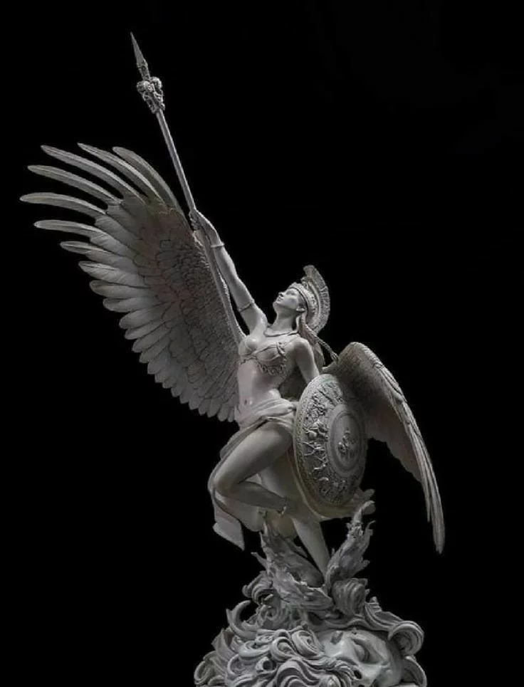
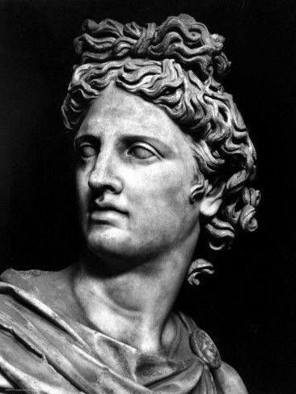
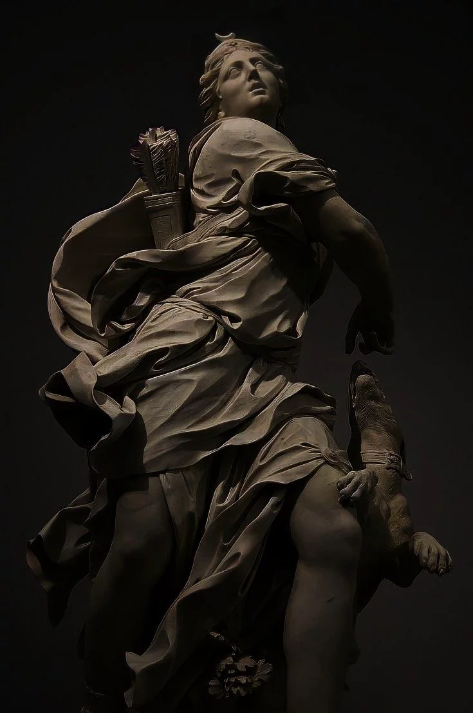
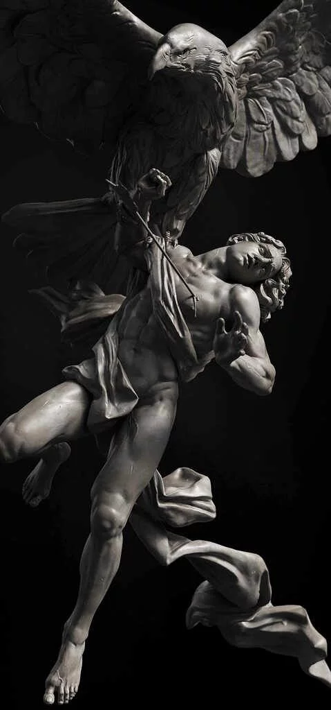
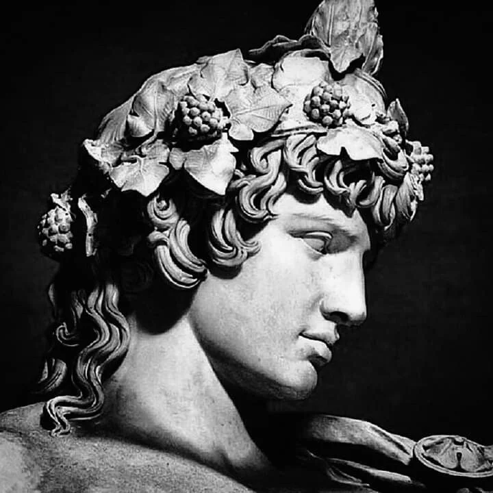

“The Olympians reflected both the beauty and flaws of humanity.”
The gods of Olympus represented wisdom, ambition, vengeance, beauty, war, and desire. Their myths revealed the fragile balance between power and downfall.

Goddess of wisdom, warfare, and strategy. Athena symbolized discipline, intellect, and calculated strength.

God of light, prophecy, music, healing, and the arts. Apollo embodied harmony, truth, and divine order.

Goddess of the hunt, wilderness, and the moon. Artemis became associated with freedom, nature, and independence.

God of war, violence, and fury. Ares represented the brutal and destructive side of conflict.

God of wine, theatre, ecstasy, and divine madness. His myths blurred the line between celebration and chaos.